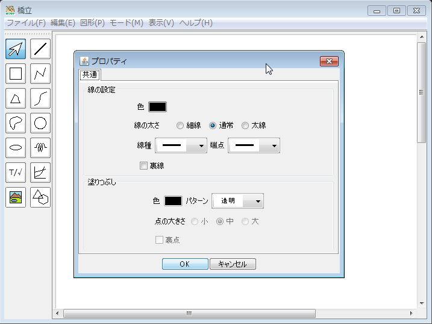

|
クリックする ⇒ |
|
右クリックする ⇒ |

- 線の設定
項目 説明 色 太さ 細線、通常、太線 線種 実線、破線など 端点の形 直線、矢印など 裏点 点図で裏点にするか - 塗りつぶしの設定
項目 説明 色 パターン 透明、単色、斜線など 点の大きさ 点図での点の大きさ 裏点 点図で裏点にするか
|
クリックする ⇒ |
|
右クリックする ⇒ |
| 項目 | 説明 |
|---|---|
| 色 | |
| 太さ | 細線、通常、太線 |
| 線種 | 実線、破線など |
| 端点の形 | 直線、矢印など |
| 裏点 | 点図で裏点にするか |
| 項目 | 説明 |
|---|---|
| 色 | |
| パターン | 透明、単色、斜線など |
| 点の大きさ | 点図での点の大きさ |
| 裏点 | 点図で裏点にするか |